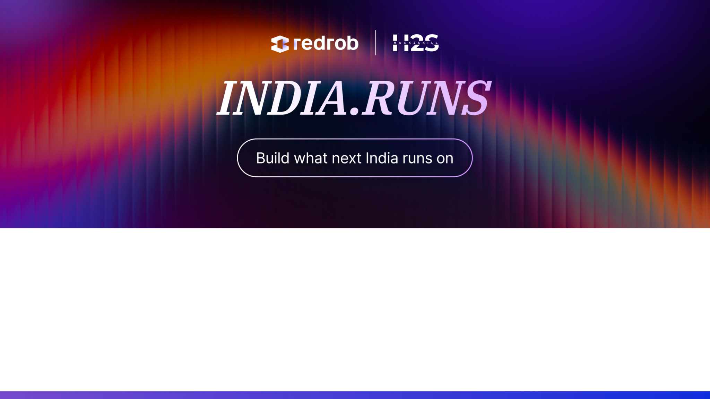
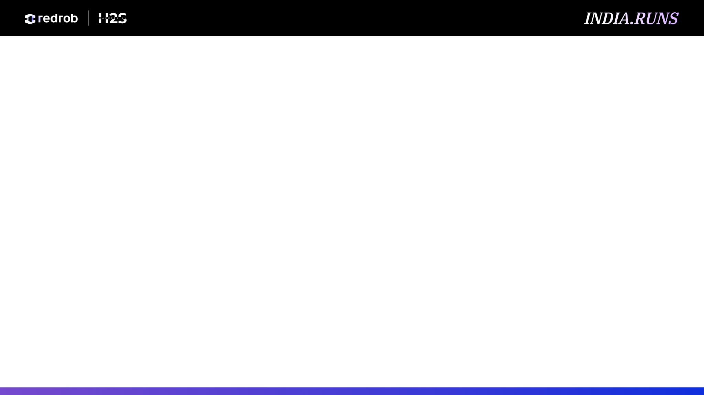
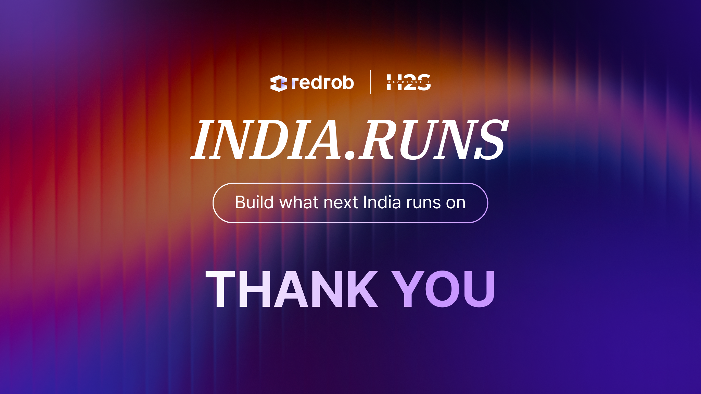

What is your proposed solution?
TalentRank AI is a recruiter decision-support engine. It parses a job description into structured intelligence, builds privacy-safe candidate profiles, retrieves the top 50 matches using a hybrid of TF-IDF and MiniLM semantic embeddings plus skill coverage, optionally reranks with a CrossEncoder, and returns a ranked shortlist where every candidate carries a structured, evidence-backed explanation card.
What differentiates your approach from traditional candidate matching systems?
Instead of pure keyword filtering or a single black-box score, we combine lexical, semantic, and structured skill/experience/activity signals into one transparent formula, retrieve-then-rerank with an optional CrossEncoder for accuracy without full-pool latency cost, and generate a rule-based (not LLM-generated) explanation card for every candidate — sensitive attributes are structurally excluded from ranking.
What are the key requirements extracted from the JD?
A rule-based parser extracts role title, seniority level, must-have and nice-to-have skills (via a skill taxonomy with regex aliases plus cue-phrase detection like "required" / "nice to have"), responsibilities (sentences containing action verbs), inferred domain, and minimum/maximum experience from explicit fields or free text.
Which candidate signals are most important for determining relevance? / How does your solution evaluate candidate fit beyond keyword matching?
Skill coverage against must-have requirements, semantic similarity, lexical overlap, experience fit, and recent activity are the five signals used. Fit beyond keywords comes from the MiniLM semantic embedding, which captures conceptual overlap (e.g. "led a team" ~ "management experience") even without exact keyword matches, backed by project/summary evidence in the explanation card.
How does your system retrieve, score, and rank candidates?
Retrieval scores the full pool with a hybrid formula (0.45×semantic + 0.35×TF-IDF + 0.20×skill match) and keeps the top 50. If CrossEncoder reranking is enabled, those 50 are rescored with a pairwise CrossEncoder. Final ranking combines all evidence into one weighted 0–100 score per candidate, sorted descending per job.
What models, algorithms, or heuristics are used?
scikit-learn TF-IDF + cosine similarity; Sentence-Transformers MiniLM (all-MiniLM-L6-v2) for semantic embeddings, cached and fingerprinted by profile-text hash; an optional Sentence-Transformers CrossEncoder (ms-marco-MiniLM-L-6-v2) for pairwise reranking; rule-based heuristics for skill coverage, experience fit, and activity normalization.
How are multiple candidate signals combined into a final ranking?
final_score = 0.30×cross_encoder + 0.20×skill_match + 0.20×semantic + 0.15×tfidf + 0.10×experience_match + 0.05×activity. When CrossEncoder is disabled, its 30% weight redistributes equally to semantic and skill match (0.35 / 0.35 / 0.15 / 0.10 / 0.05).
How are ranking decisions explained?
Every candidate gets a rule-based explanation card: a fit summary, matched/missing must-have and nice-to-have skills, an experience-fit sentence, a project-evidence sentence, an activity-evidence sentence, a confidence tier (High/Medium/Low), and an explicit risk-or-gap statement.
How do you prevent hallucinations or unsupported justifications?
Explanations are template-generated from the same computed numbers used for scoring, not produced by an LLM — every sentence is deterministically derived from a candidate's actual skills, experience, and activity fields, so there is nothing to hallucinate. Skill matches are only reported if they exist verbatim in the candidate's data.
How does your solution handle inconsistent, low-quality, or suspicious profiles?
Text normalization (lowercasing, whitespace collapse, delimiter-aware skill splitting) handles inconsistent formatting; missing numeric fields are coerced safely rather than crashing; candidates with no matching skills or below-minimum experience are still ranked but surface an explicit gap statement, keeping the recruiter in control.
What is the complete workflow from JD input to ranked candidate output?
JD CSV row → rule-based JD parser extracts structured intelligence → candidate CSV rows → privacy-safe profile text builder (excludes sensitive fields) → cached MiniLM embeddings + TF-IDF vectorization → hybrid top-50 retrieval → optional CrossEncoder pairwise rerank → weighted final score + explanation card per candidate → ranked_output.csv / .json / .xlsx and a Responsible-AI feature report, also rendered live in the Streamlit dashboard.
What results or insights demonstrate ranking quality?
On our sample dataset, ranking clearly separates strong from limited fits — for the DevOps role, the candidate matching 5/5 required skills scores 85.9 vs. 12.4 for a 0/5-skill candidate, and below-minimum-experience candidates are automatically flagged in their risk statement. With relevance labels, the Evaluation page reports Precision@5/@10, Recall@10, NDCG@10, and MRR; without labels it reports top-10 skill coverage, semantic score, and experience match, plus an ablation comparing TF-IDF-only, Semantic-only, Hybrid, and Hybrid+CrossEncoder variants.
How does your solution meet the challenge's runtime and compute constraints?
Hybrid retrieval scores the full pool with lightweight TF-IDF/cosine math and cached MiniLM embeddings, recomputed only when profile text changes (SHA-256 fingerprint), so repeat runs skip embedding generation. The expensive CrossEncoder pass is optional and restricted to the top-50 shortlist, not the full pool, bounding worst-case latency.
What technologies, frameworks, and tools were used and why were they selected for this solution?
Python 3.11 for the pipeline; pandas/NumPy for data handling; scikit-learn for TF-IDF and cosine similarity (fast, dependency-light lexical baseline); Sentence-Transformers MiniLM-L6-v2 for semantic embeddings (small, CPU-friendly, strong quality/latency trade-off); Sentence-Transformers CrossEncoder ms-marco-MiniLM-L-6-v2 for optional high-fidelity pairwise reranking; Streamlit for a fast, recruiter-facing dashboard without building a separate frontend; pytest for automated regression tests covering data loading, JD parsing, fairness exclusions, explainability, and evaluation metrics.
Github video etc
GitHub repository: github.com/pradyumna-naik/talentrank-ai (public — source code, tests, redesigned Streamlit dashboard, README with setup steps, and this deck).
Ranked output: data/outputs/ranked_output.csv / .xlsx / .json.
Demo: run "streamlit run app/streamlit_app.py" locally per the README, or view the dashboard screenshots included in the repo's deck/ folder.
